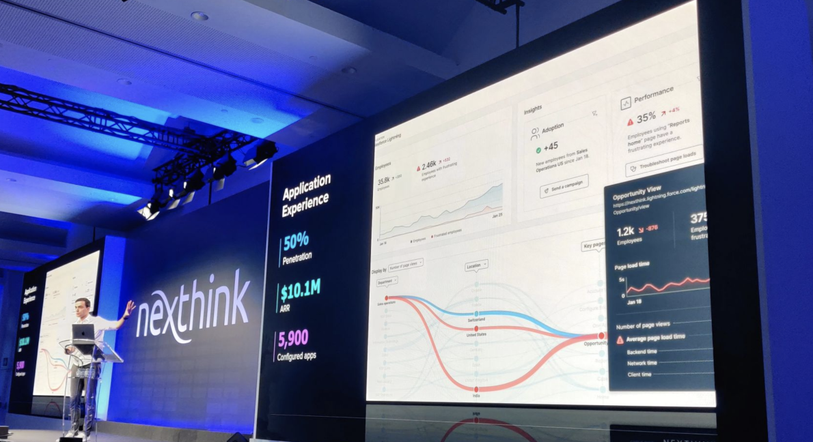
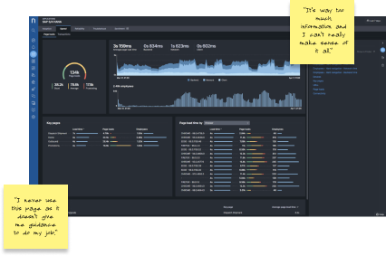

IT Support · Nexthink Infinity
Application
Application
Experience
Giving IT teams a unified view of application performance across the entire digital workplace.
Giving IT teams a unified view of application performance across the entire digital workplace.
IT teams had no unified way to see application performance across their entire digital workplace. Data was siloed across monitoring tools, and correlating crash rates, latency, or adoption issues meant manual effort across multiple disconnected dashboards — slowing response times and burying root causes.
I ran discovery sessions and user interviews with IT operations teams to map how they diagnose application issues today. From there I designed a modular, scannable dashboard approach — iterating from a broad vision through to detailed interaction design, validated at each stage with real IT practitioners.
A unified application performance hub embedded inside Nexthink Infinity — giving IT teams a single pane of glass for app health, adoption, and performance across 11.5M devices. Shipped with full dark and light theme support to match enterprise IT environments.
The initial Appex concept established the core idea: a consolidated application health view replacing scattered monitoring tools. This first vision became the alignment artefact for product, engineering, and leadership — defining what we were building before we resolved how.

User interviews with IT operations teams shaped the data hierarchy — understanding which signals mattered most under pressure and how engineers actually move from detection to diagnosis. Multiple rounds of iteration refined the layout, filters, and drill-down patterns before the design system was locked.

The final design delivered a modular, theme-aware dashboard giving IT teams immediate visibility into application adoption, performance, and health — with drill-down paths from fleet-wide trends to individual device data. Both dark and light themes were designed to production fidelity.